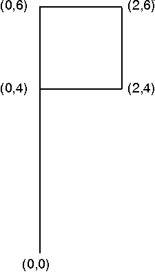

The available transformations are listed in the following table.
Transformations
ÚÄÄÄÄÄÄÄÄÄÄÄÄÄÄÄÄÂÄÄÄÄÄÄÄÄÄÄÄÄÄÄÄÄÄÄÄÄÄÄÄÄÄÄÄÄÄÄÄÄÄÄÄÄÄÄÄÄÄÄÄÄ¿ ³Operation ³Result ³ ÃÄÄÄÄÄÄÄÄÄÄÄÄÄÄÄÄÅÄÄÄÄÄÄÄÄÄÄÄÄÄÄÄÄÄÄÄÄÄÄÄÄÄÄÄÄÄÄÄÄÄÄÄÄÄÄÄÄÄÄÄÄ´ ³Scaling ³Shrinks or enlarges the object ³ ÃÄÄÄÄÄÄÄÄÄÄÄÄÄÄÄÄÅÄÄÄÄÄÄÄÄÄÄÄÄÄÄÄÄÄÄÄÄÄÄÄÄÄÄÄÄÄÄÄÄÄÄÄÄÄÄÄÄÄÄÄÄ´ ³Reflection ³Creates a mirror image of an object with ³ ³ ³respect to the x- or y- axis ³ ÃÄÄÄÄÄÄÄÄÄÄÄÄÄÄÄÄÅÄÄÄÄÄÄÄÄÄÄÄÄÄÄÄÄÄÄÄÄÄÄÄÄÄÄÄÄÄÄÄÄÄÄÄÄÄÄÄÄÄÄÄÄ´ ³Rotation ³Rotates the object ³ ÃÄÄÄÄÄÄÄÄÄÄÄÄÄÄÄÄÅÄÄÄÄÄÄÄÄÄÄÄÄÄÄÄÄÄÄÄÄÄÄÄÄÄÄÄÄÄÄÄÄÄÄÄÄÄÄÄÄÄÄÄÄ´ ³Translation ³Shifts the object with respect to the origin³ ³ ³of the coordinate system ³ ÃÄÄÄÄÄÄÄÄÄÄÄÄÄÄÄÄÅÄÄÄÄÄÄÄÄÄÄÄÄÄÄÄÄÄÄÄÄÄÄÄÄÄÄÄÄÄÄÄÄÄÄÄÄÄÄÄÄÄÄÄÄ´ ³Shear ³Rotates either all the vertical or all the ³ ³ ³horizontal lines in an object ³ ÀÄÄÄÄÄÄÄÄÄÄÄÄÄÄÄÄÁÄÄÄÄÄÄÄÄÄÄÄÄÄÄÄÄÄÄÄÄÄÄÄÄÄÄÄÄÄÄÄÄÄÄÄÄÄÄÄÄÄÄÄÄÙ
These basic operations can be combined.
The PM provides special functions to perform scaling, rotation, and translation and also enables applications to specify the transformation matrix directly. Applications can specify values for more than one type of transformation on a single transformation call.
Transformations are used to manipulate graphic objects as they are being moved from one coordinate space to another. These operations are performed by functions called transformation functions. There are also functions that help perform the transformations called helper functions.
The scaling, reflection, rotation, translation, and shear transformations are best demonstrated by applying them to a picture. The following figure shows the image of a flag before any transformations have been applied. The flag is defined by five points. Their (x,y) coordinates are (0,0), (0,4), (0,6), (2,6), and (2,4).

Flag Before Transformation
In the next several sections, where the transformations are described in detail, the effect of the transformation on the flag is illustrated.